Metasploitable 2 Controlled Vulnerability Testing
Project Overview
Metasploitable 2 was deployed within the MaryShield Cyber Lab as an intentionally vulnerable Linux server used for controlled security testing, vulnerability assessment, service enumeration, exploit validation, and defensive monitoring.
The system is isolated within the DMZ network so offensive testing can be performed safely without exposing vulnerable services to production systems or the public Internet.
This project demonstrates how intentionally vulnerable systems can be used to validate penetration testing techniques while simultaneously testing detection capabilities in pfSense, Security Onion, Splunk Enterprise, and Wazuh XDR.
All exploitation activities documented in this case study were performed exclusively against systems owned and operated within the isolated MaryShield Cyber Lab.
Enterprise Architecture
Metasploitable 2 operates inside the isolated DMZ segment alongside Kali Linux. pfSense controls communication between the DMZ and other enterprise networks, while Security Onion, Splunk Enterprise, and Wazuh provide monitoring and detection capabilities.
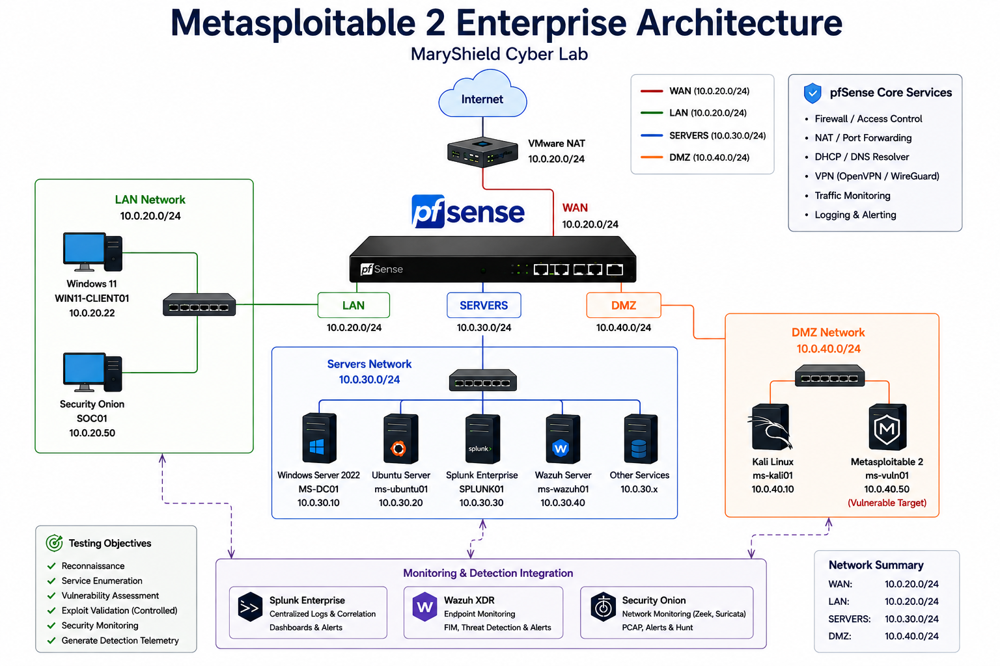
Metasploitable 2 Installation
Metasploitable 2 was deployed as a dedicated VMware Workstation virtual machine using the intentionally vulnerable Linux appliance.
Deployment Tasks
- Downloaded and extracted the Metasploitable virtual machine.
- Imported the virtual machine into VMware Workstation.
- Assigned the VM to the isolated DMZ network.
- Configured CPU, memory, and storage resources.
- Booted the Linux appliance.
- Verified local console access.
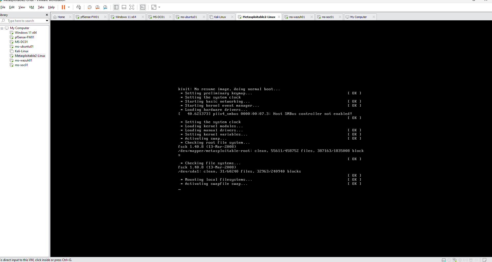
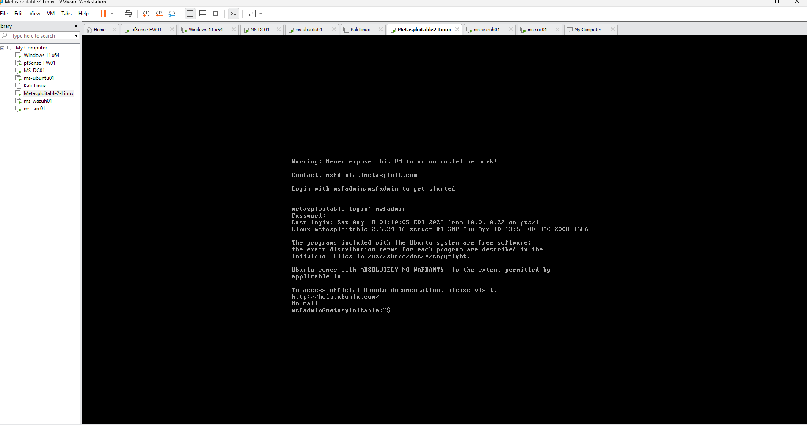
Network Configuration
Metasploitable 2 was assigned a static address within the DMZ to provide a predictable target for controlled penetration testing and monitoring.
| Setting | Value |
|---|---|
| System | Metasploitable 2 |
| IP Address | 10.0.40.50/24 |
| Default Gateway | 10.0.40.1 |
| Network Segment | DMZ |
| Primary Role | Controlled Vulnerability Testing Target |
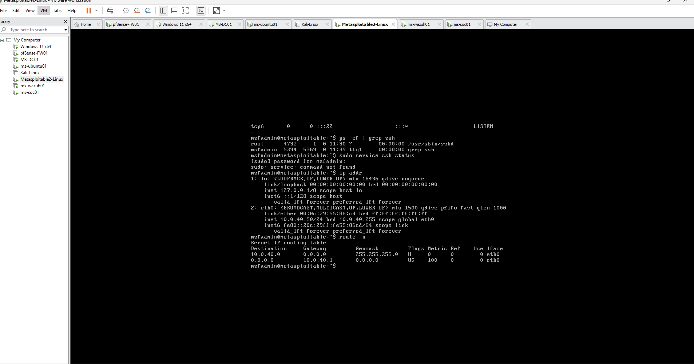
Vulnerable Services
Metasploitable 2 intentionally exposes multiple outdated and insecure network services. These services provide realistic targets for reconnaissance, enumeration, vulnerability analysis, and controlled exploitation.
Selected Services
- FTP
- SSH
- Telnet
- HTTP
- Samba / SMB
- MySQL
- PostgreSQL
- DistCC
- UnrealIRCd
- VSFTPD
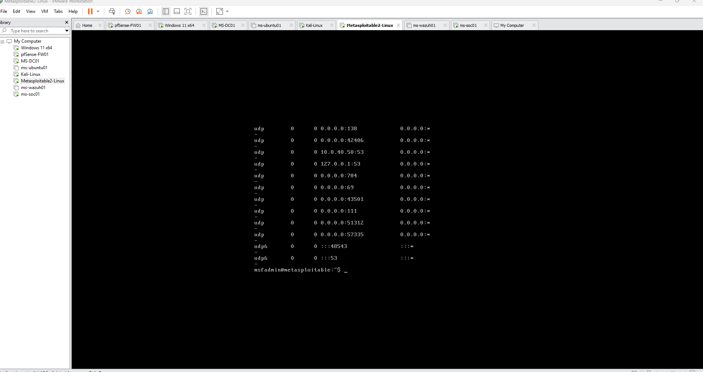
Vulnerability Assessment
Kali Linux was used to perform authorized reconnaissance and vulnerability assessment against the Metasploitable server.
Assessment Activities
- Host discovery
- Port scanning
- Service-version detection
- Operating-system identification
- Banner grabbing
- Vulnerability enumeration
nmap -sV 10.0.40.50
sudo nmap -A 10.0.40.50
nmap --script vuln 10.0.40.50
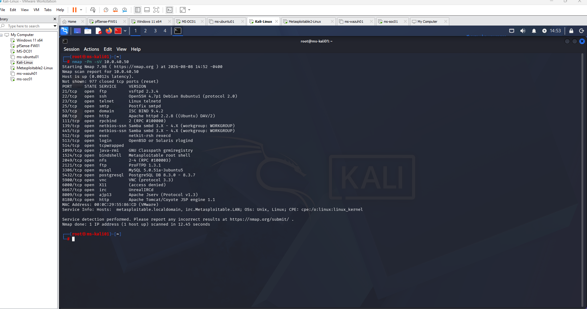
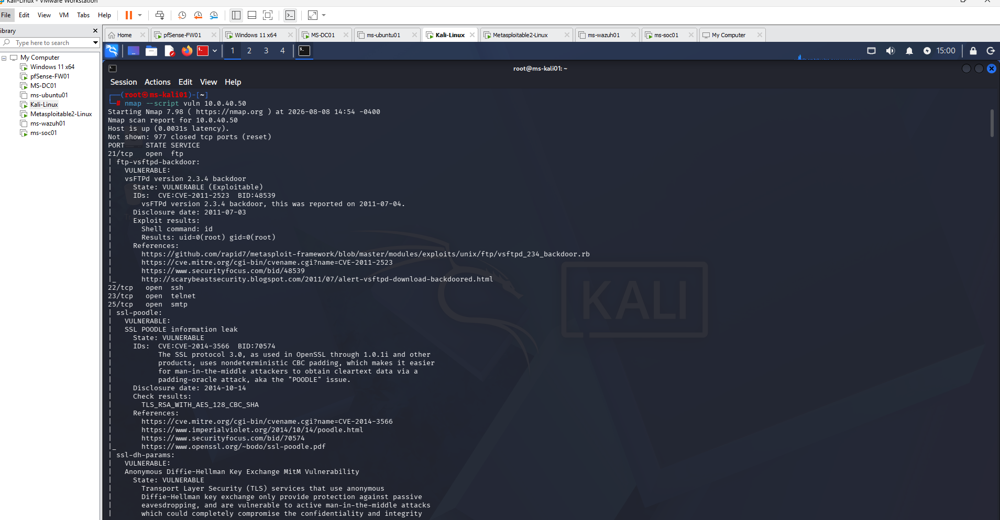
Controlled Exploitation
Selected vulnerabilities were validated using controlled exploitation techniques from Kali Linux. Testing was limited strictly to the isolated Metasploitable system.
Testing Examples
- VSFTPD backdoor validation
- Samba Usermap Script testing
- DistCC vulnerability validation
- UnrealIRCd vulnerability testing
The objective was not simply to obtain access to the vulnerable system, but to understand how exploitation activity appears across network and endpoint monitoring platforms.
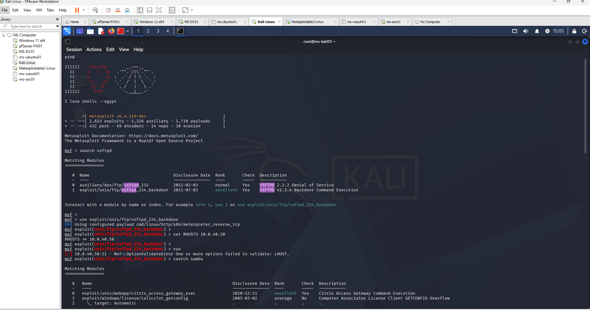
Detection and Monitoring
Security telemetry generated during testing was reviewed across the defensive platforms deployed within the MaryShield Cyber Lab.
pfSense Firewall
Firewall logs provide visibility into communication between Kali Linux, Metasploitable, and other security zones.
Security Onion
Suricata alerts, Zeek metadata, Hunt, and packet capture provide network-level visibility into scans and exploitation attempts.
Splunk Enterprise
Centralized logs support correlation of attack activity with other enterprise security events.
Wazuh XDR
Endpoint and security telemetry provide additional context for investigations involving monitored systems.
Security Onion Detection
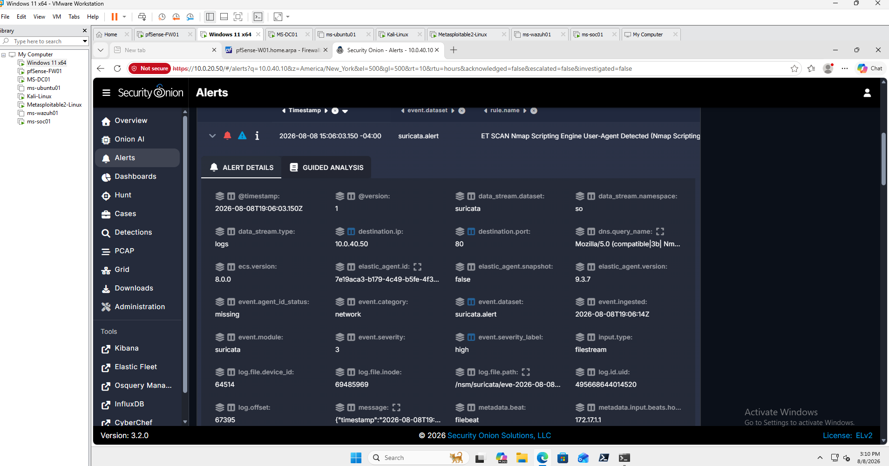
Splunk Detection
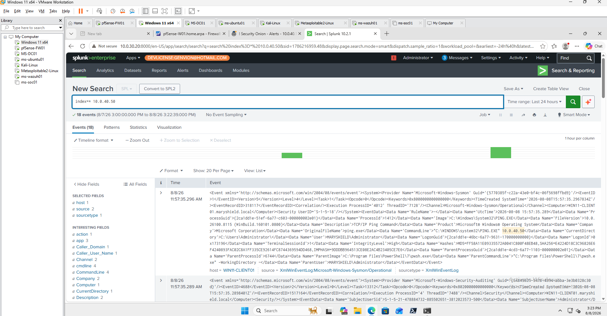
Wazuh Detection
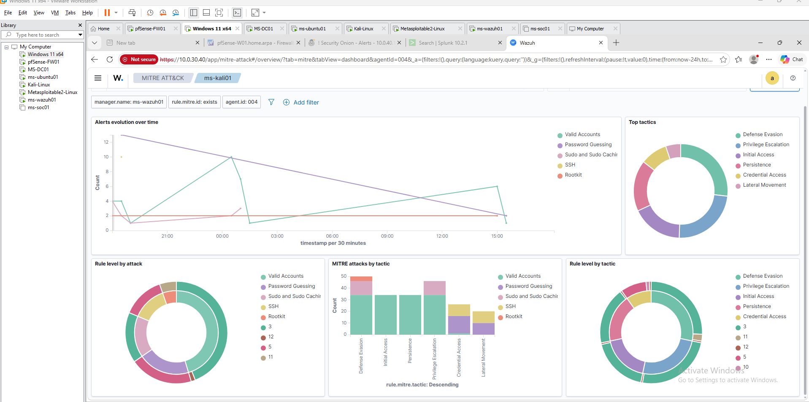
Lessons Learned
The Metasploitable project demonstrated how outdated services, weak configurations, and unnecessary exposure can significantly increase organizational attack surface.
- Improved understanding of service enumeration and vulnerability discovery.
- Learned how outdated applications can expose exploitable weaknesses.
- Strengthened Nmap and vulnerability assessment skills.
- Improved familiarity with controlled exploit validation.
- Observed how network attacks generate detectable security telemetry.
- Reinforced the importance of patch management.
- Demonstrated the security value of network segmentation.
- Improved understanding of IDS and SIEM correlation.
- Reinforced defense-in-depth principles.
- Improved technical documentation and evidence collection.
Skills Demonstrated
Linux Administration
Managed and configured a deliberately vulnerable Linux server within an isolated test environment.
Network Reconnaissance
Identified hosts, exposed ports, and network services using authorized scanning techniques.
Service Enumeration
Analyzed exposed FTP, SSH, HTTP, SMB, database, and other services.
Vulnerability Assessment
Evaluated outdated and intentionally vulnerable services using security assessment tools.
Exploit Validation
Performed controlled exploitation against deliberately vulnerable lab services.
Network Security
Applied isolation and segmentation principles to contain vulnerable systems.
Threat Detection
Reviewed security telemetry generated by penetration testing activity.
Security Documentation
Documented architecture, testing methodology, findings, screenshots, and lessons learned.
Related Projects
Explore other projects that support the controlled attack, detection, and investigation workflow within the MaryShield Cyber Lab.
Kali Linux
Provides the offensive security workstation used for reconnaissance, vulnerability assessment, and controlled exploitation.
View ProjectSecurity Onion
Provides Suricata alerts, Zeek metadata, Hunt, and packet-level network visibility.
View ProjectSplunk Enterprise
Provides centralized logging, dashboards, searching, and security-event correlation.
View ProjectWazuh XDR
Provides endpoint monitoring, security analytics, FIM, and alert investigation.
View ProjectWindows Server 2022
Provides enterprise infrastructure services used throughout the broader lab environment.
View ProjectActive Directory
Provides enterprise identity and authentication infrastructure for later attack-detection exercises.
View ProjectThreat Hunting
Correlates offensive activity across network, endpoint, and SIEM telemetry.
View Project